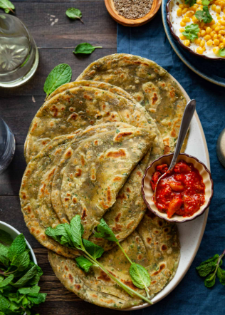

Pudina Paratha
Ingredients
- 1 cup whole wheat flour
- 1/2 cup fresh mint leaves, finely chopped
- 1 teaspoon cumin seeds
- 1 teaspoon ajwain (carom seeds)
- 1/2 teaspoon turmeric powder
- Salt to taste
- Water, as needed for kneading
- Oil or ghee for cooking

Cooking Process
- In a mixing bowl, combine whole wheat flour, chopped mint leaves, cumin seeds, ajwain, turmeric powder, and salt.
- Add water little by little and knead into a soft dough. Cover and let it rest for 15-20 minutes.
- Divide the dough into small balls. Roll each ball into a thin circle using a rolling pin, dusting with flour as needed.
- Heat a tawa or skillet over medium heat. Cook the paratha on one side until bubbles appear, then flip and apply oil or ghee on the cooked side.
- Cook the other side until golden brown spots appear. Repeat the process with the remaining dough balls.
- Serve the pudina paratha hot with yogurt, pickle, or chutney.
Nutritional Information (Per Serving)
- Calories: 150 kcal
- Carbohydrates: 24g
- Protein: 4g
- Fat: 3g
- Fiber: 3g
- Iron: 6% of daily value
- Vitamin A: 10% of daily value
Cooking Tips and Tricks
- Use fresh mint leaves for the best flavor. You can also add coriander leaves for a different taste profile.
- If you prefer a softer paratha, add a spoonful of yogurt while kneading the dough.
- To add extra flavor, toast the cumin and ajwain seeds in a dry pan before adding them to the dough.
- Always roll the paratha evenly to ensure it cooks uniformly.
- If you want a crispier paratha, apply ghee or oil generously while cooking.